Saupe et al. 2019
Spatio-temporal climate change contributes to latitudinal diversity gradients
気候による生息域分断に起因する種分化や絶滅，および分散だけを使って，現在のLDGに近いパターンが得られる（ニッチ進化や種間相互作用を考慮せず）．
シミュレーション手法と結果を示した図
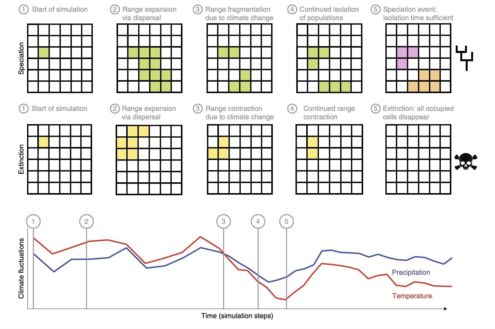シミュレーション手法
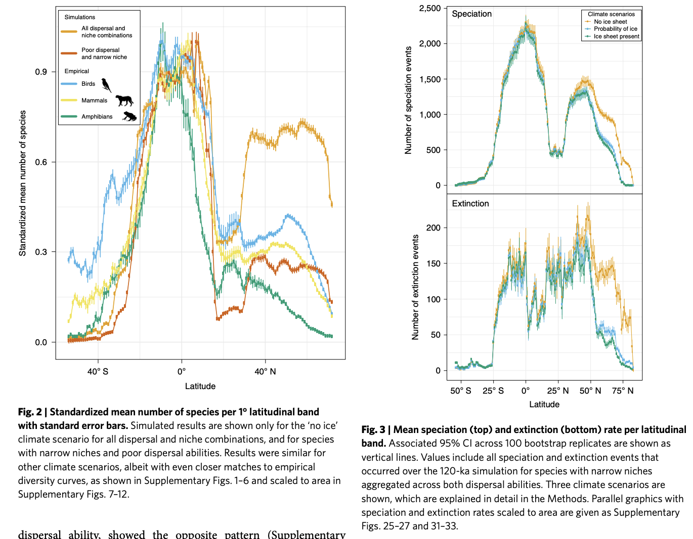シミュレーション結果
Wen et al. 2016
Multiscale partitioning of small mammal β-diversity provides novel insights into the Quaternary faunal history of Qinghai–Tibetan Plateau and Hengduan Mountains
中国の小さい哺乳類を対象に，チベット高原と横端山脈（高原の東端）のβ多様性パターンを解析．もともと，横端山脈にrefugiaがあり，最終氷期には生物はそちらに逃げていたと思われていた．ゆえにrecolonization lagの結果経度方向（東→西）にnest構造があると予測されていた．しかし，高原で軽度方向のturnoverが強くnest構造がないことがわかった．つまり，高原にもところどころにlocal refugiaがあったという見方が支持される．さらに，山脈ではturnoverが強いことから，山の隔離効果で種の多様化が起きていたことが示唆される．
調査地及び結果の図
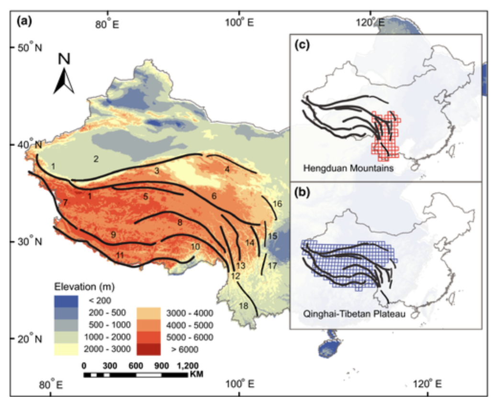調査地
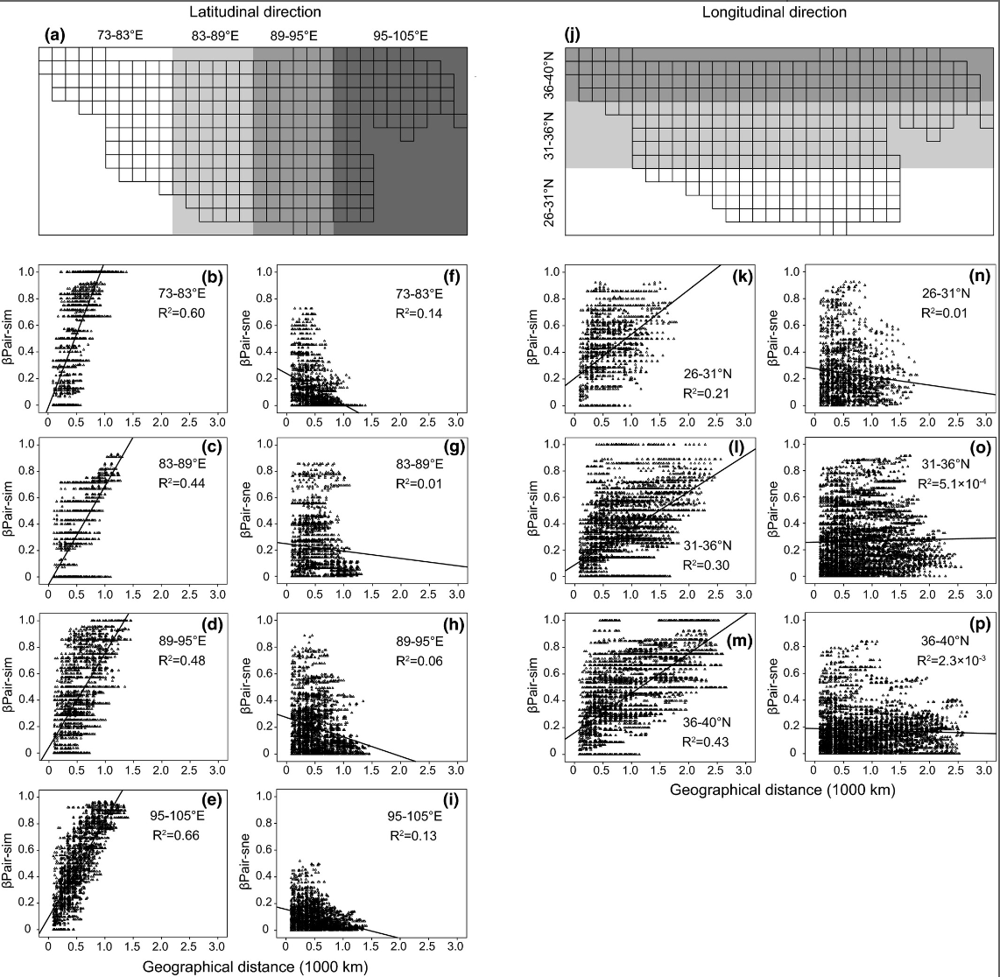チベット高原 (QTP) のspatial beta
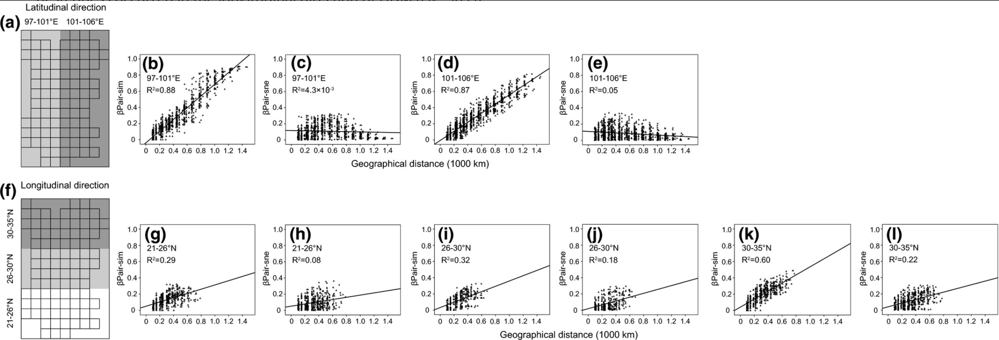横端山脈 (HDM) のspatial beta
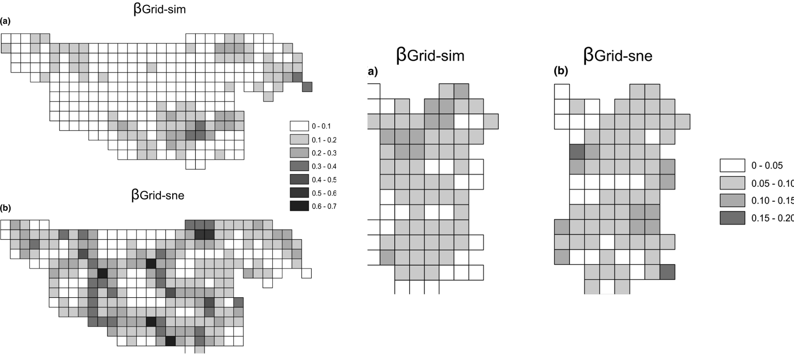Grid beta diversity
Arfianti & Costello 2020
Global biogeography of marine amphipod crustaceans: latitude, regionalization, and beta diversity
端脚類（移動性低い底質性の甲殻類）の多様性パターンを解析．5度グリッドで在データを集計．アルファ多様性では，赤道付近に（弱いが）Dipのある非単峰性パターンが得られた（サンプルバイアスに頑健なES50を主に用いて解析）．β多様性（緯度バンドごとにランダムにグリッドを持ってきて，sorensen/turnover/nestednessを計算）は，アルファ多様性と似たようなパターンを示した．赤道付近でturnoverが最大＋高緯度ではnestednessが多少大きくなる．
種多様性の緯度勾配
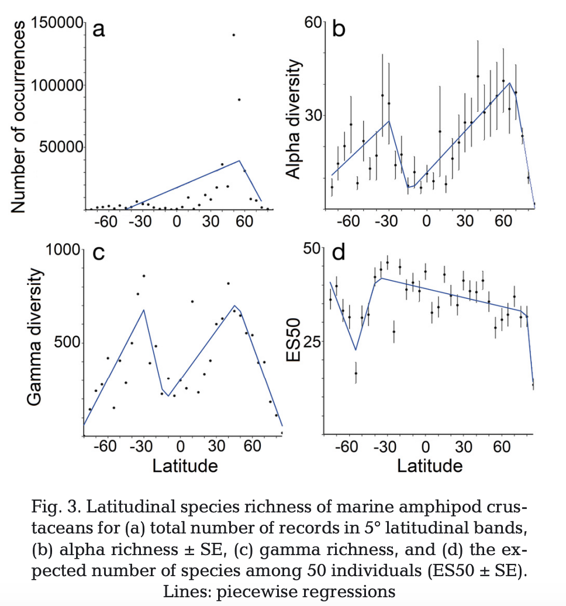アルファ＋ガンマ多様性（★ガンマ多様性のほうがサンプルバイアスに対し頑強）
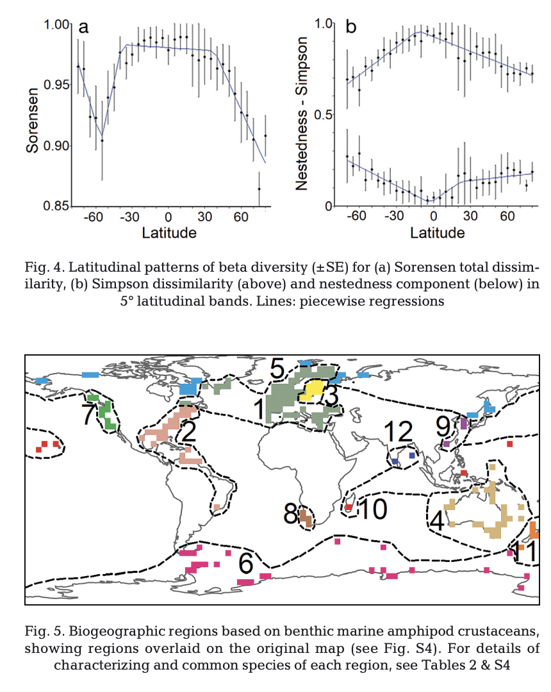ベータ多様性と，種の類似性に基づくbioregion；マダガスカル群集は南アフリカと，南極の群集と南アメリカと違いがある．オーストラリア付近も割と固有性がある→端脚類の分散能力の低さを反映？
Stein et al 2014
Environmental heterogeneity as a universal driver of species richness across taxa, biomes and spatial scales
環境不均一性（異質性？ heterogeneity）と種多様性の相関を調べた研究をメタ分析．土地被覆、植生、気候、土壌、地形の不均質性の個別の効果は有意に正であり、植生と地形の不均質性は特に種の豊かさと強い関連を示すことが分かった。空間スケールや，同面積のプロットを用いた研究であるかどうかがメタ回帰の共変量として有意であった．＜空間スケール（エクステント）の影響に関する議論が参考になる＞
メタ分析の結果
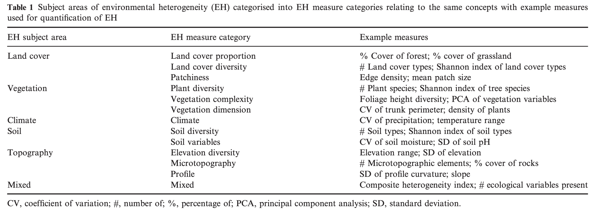環境不均一性の定量化方法．
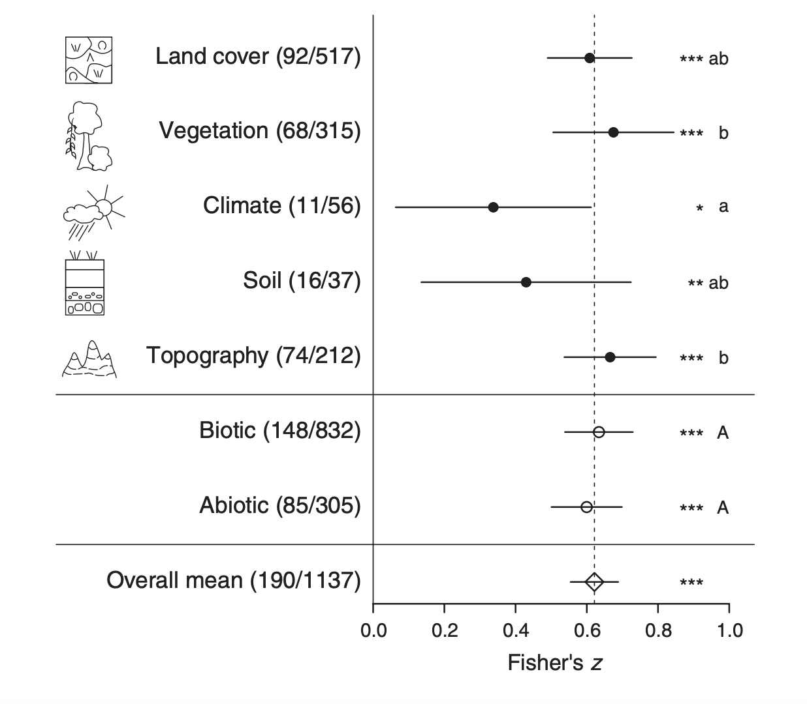メタ分析の結果．
Renema et al. 2008
Hopping Hotspots: Global Shifts in Marine Biodiversity
過去5000万年の間に，海洋生物多様性のホットスポットは3つの場所を移動した．これらは陸の移動と同時に起こっていた．現在，インドーオーストラリア諸島 Indo-Australian archipelago が世界で最も多様性が高い海であるが，IAAの種の多くは，Pliocene以前にIAAの外で起源している．
Hopping hotspots
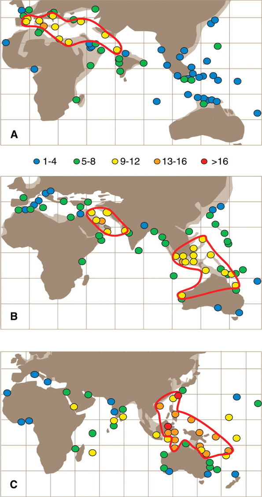大型有孔虫の同地点での記録属数; Hopping hotspot: (A) the late Middle Eocene (42 to 39 Ma), (B) the Early Miocene (23 to 16 Ma), (C) the Recent. テティアン海路の閉鎖＆寒冷化により，テチス海の生物多様性は減退した．
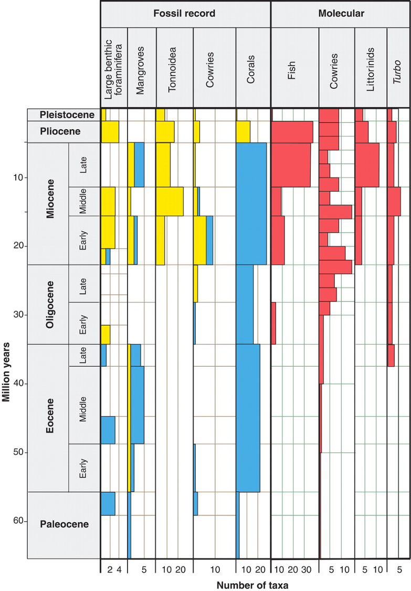現在のIAA (Indo-Australian archipelago) の種が，最初に記録されている年代．